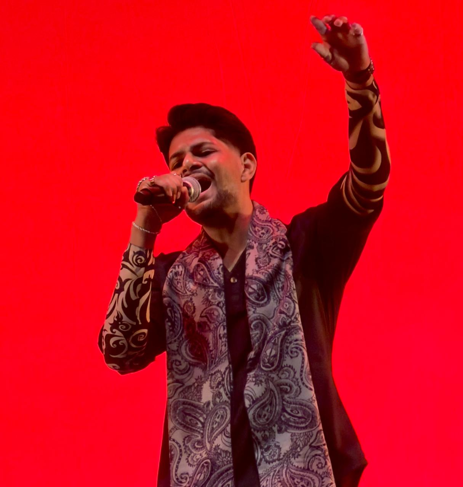
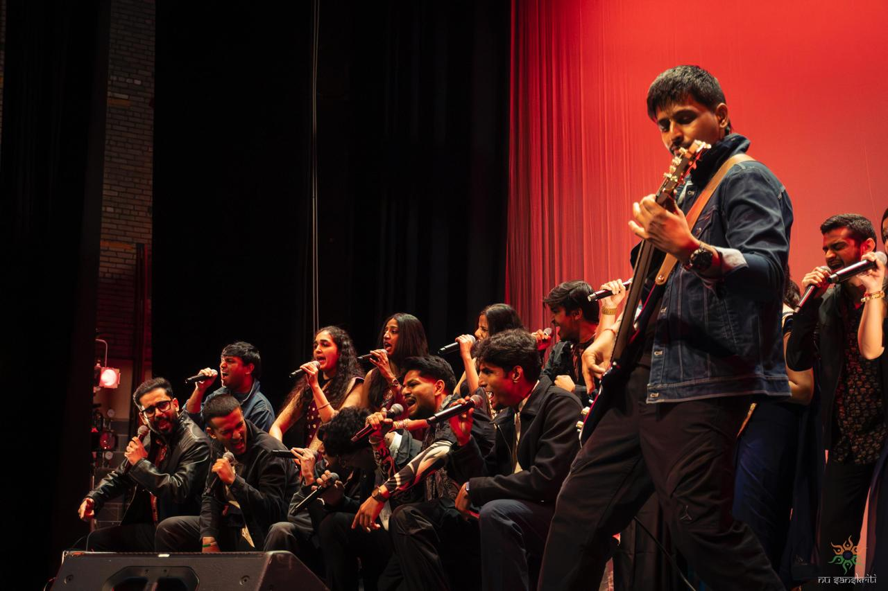

VIT Chennai Brand Ambassador
Selected as one of the faces of Vellore Institute of Technology, Chennai, and featured in the 2025 university brochure and official advertisement.
Leadership • Service • Music • Community
My extracurricular journey reflects the creative, social, and leadership side of who I am. Along with computer science and AI, I enjoy music, event coordination, volunteering, community work, and representing the spaces I belong to.
View My LinkedInSelected as one of the faces of Vellore Institute of Technology, Chennai, and featured in the 2025 university brochure and official advertisement.
Helped co-organize the TechnoVIT’22 university fest and supported event management as part of VIT University’s Finance & Trading Club.
Served as Social Media Head for Annette of Rotary Club of Chennai Sarvam, managing content and improving community engagement.

Singing, performance, and Indian classical music help me stay connected to culture, emotion, and storytelling. Music also helps me build confidence, stage presence, and communication skills.
Instagram: @akhilan_anbu
MIT Performance Highlight
I performed at MIT’s 15th Anniversary Concert, “Spiderman HΩhmcoming,” at Kresge Auditorium on November 22, 2025, representing Indian classical music through live performance.
Worked as a campaign coordinator for awareness rallies at VIT University in collaboration with the Ministry of Social Justice & Empowerment, Government of India.
Volunteered in events as part of the Dream Merchants Club during Vibrance’23, contributing to event support and coordination.
Took part in student rallies, road clean-ups, and environmental awareness activities through Junior Red Cross and Eco Club work.
Organized and conducted the first 2024 event of Rotary Club of Chennai Sarvam’s Pongal Thiruvizha Fest at the Cosmopolitan Club, Chennai.
Served as Event Coordinator and Compere for a guest lecture on robotics empowered by AI for better healthcare.
Attended Rotary Conference SANGAMAM’24 at IIT Madras Research Park and engaged with community-focused leadership initiatives.
I use LinkedIn to share my academic, professional, research, music, and extracurricular milestones.
Posts about my journey as a Computer Science graduate student, research contributor, and teaching assistant.
View on LinkedInUpdates connected to AI/ML projects, LLM research, publications, internships, and technical growth.
View on LinkedInHighlights from university events, Rotary activities, volunteering, music performances, and community involvement.
View on LinkedIn